M.Sc. in Aeronautics & Astronautics
Teaching Assistantships
- ME 210: Introduction to Mechatronics (2026)
- CME 215: Machine Learning and the Physical Sciences (2025)
I'm a master's student in Aeronautics & Astronautics at Stanford University, currently conducting research in the Autonomous Systems Lab advised by Prof. Marco Pavone. I am also working as a Research Assistant with Prof. Tim De Silva, using Reinforcement learning to study and model human decision-making in macroeconomics and behavioral economics. Before Stanford, I completed a B.Tech. in Mechanical Engineering with Honors and a minor in AI & Data Science at IIT Bombay, where I worked with Prof. Dwaipayan Mukherjee in the Controls & Computing Lab. My interests span the intersection of control theory, machine learning, and decision making - with a focus on autonomous driving and space vehicles.
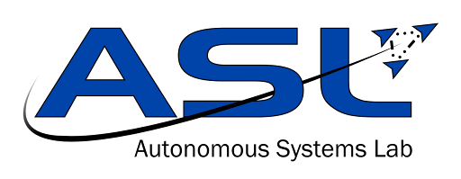
Teaching Assistantships
Teaching Assistantships
Developing and testing autonomy stack modules for Rivian's vehicles, focusing on perception-planning integration and robust performance for real-world deployment.
This paper introduces SAGES (Semantic Autonomous Guidance Engine for Space), a trajectory-generation framework that translates natural-language commands into spacecraft trajectories that reflect high-level intent while respecting nonconvex constraints.
Journal submission extending SAGES, a semantic trajectory-generation framework that translates natural-language intent into feasible spacecraft rendezvous trajectories under nonconvex constraints.
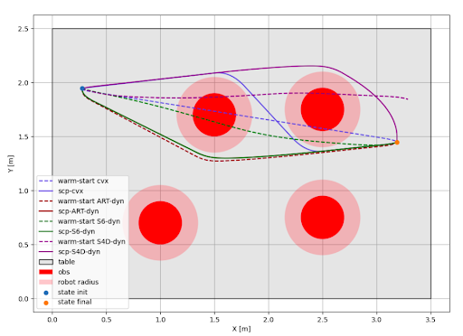
My work benchmarks sequence models - including Decision Transformer, S6-Mamba, and S4D - to warm-start nonlinear trajectory optimizers, with safety enforced through Sequential Convex Programming. The Decision Transformer demonstrated the strongest performance, achieving an 80% faster warm-start (0.37s), 42% lower runtime, and 14% higher feasibility compared to numerical solvers. I further deployed the learned controller on a Jetson AGX Orin within a ROS2 stack, where it achieved real-time open-loop execution and closed-loop flight through integrated MPC on Freeflyer robots.
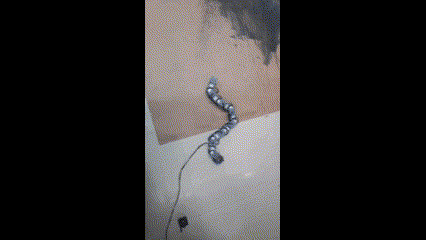
Designed a modular snake robot and proposed a decentralized path-following controller exploiting local link autonomy to track general curves smoothly.
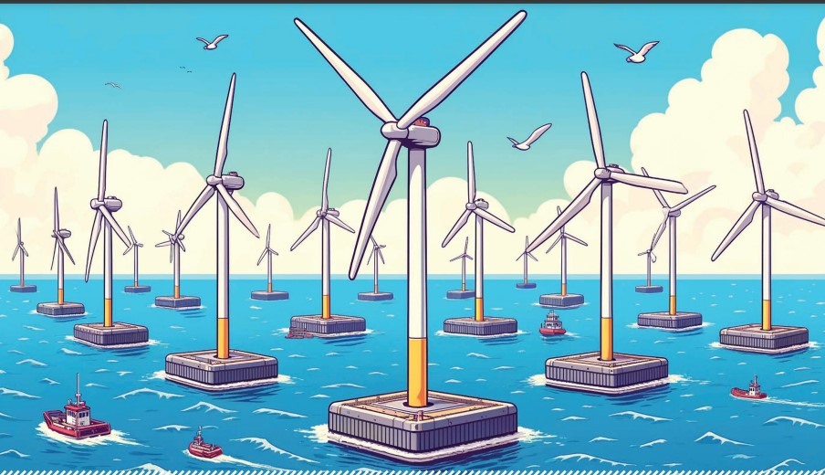
Research intern @ UBC Control Engineering Lab. Repositioning strategies that unlock unique potential of floating offshore wind farms.
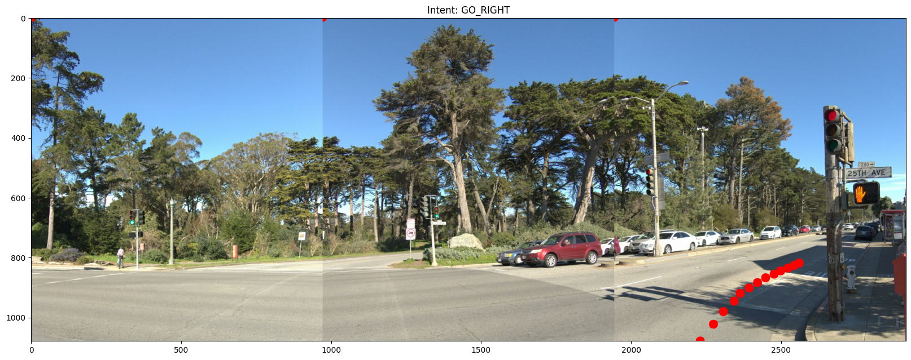

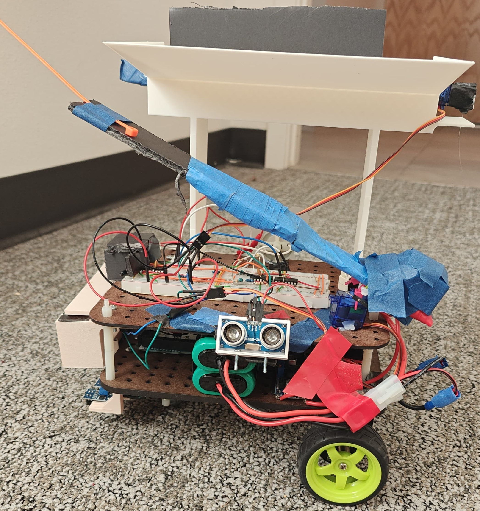
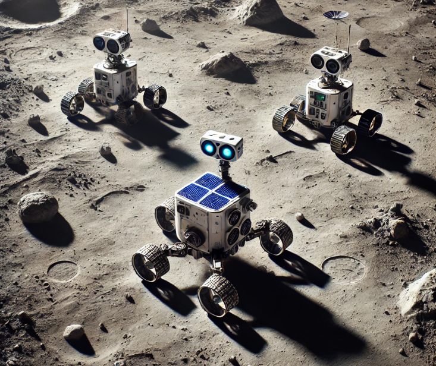
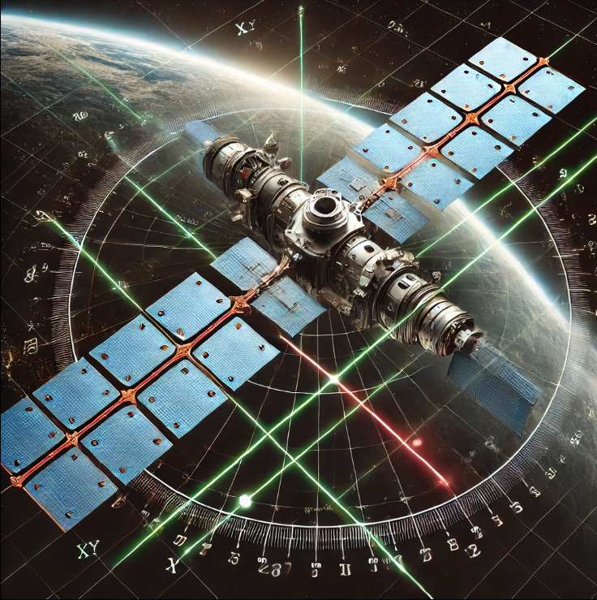
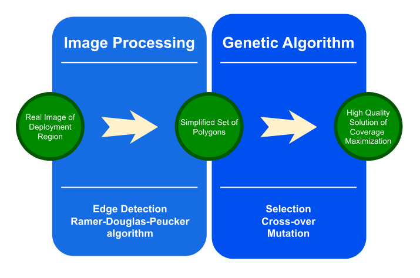
This work develops a UAV surveillance framework for disaster management, focusing on maximizing coverage in non-convex and disconnected regions. The framework processes input images, extracts boundaries, and reduces complexity by approximating space as a union of polygons. A genetic algorithm with Monte Carlo sampling optimizes sensor configurations, leveraging problem geometry for efficient coverage.
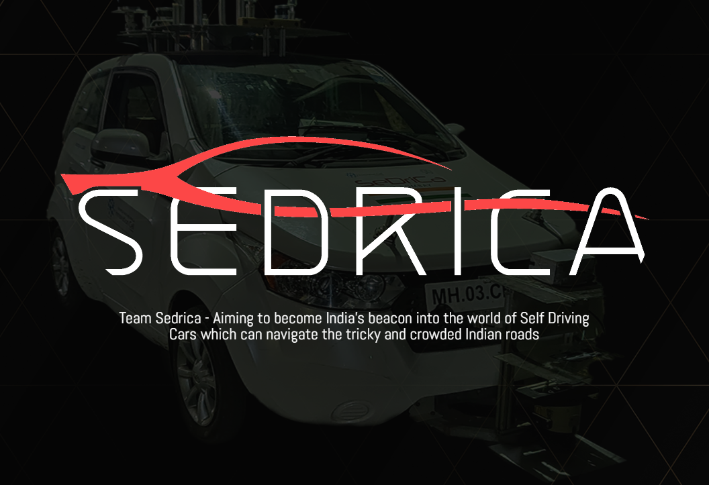
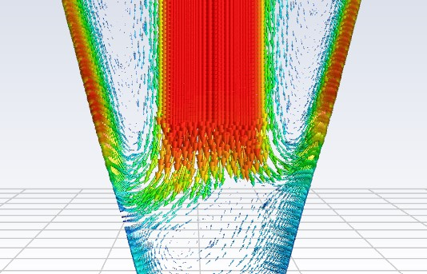
Conference Reviewer: CDC 2025, CoDIT 2025, RSS (OOD Workshop) 2025